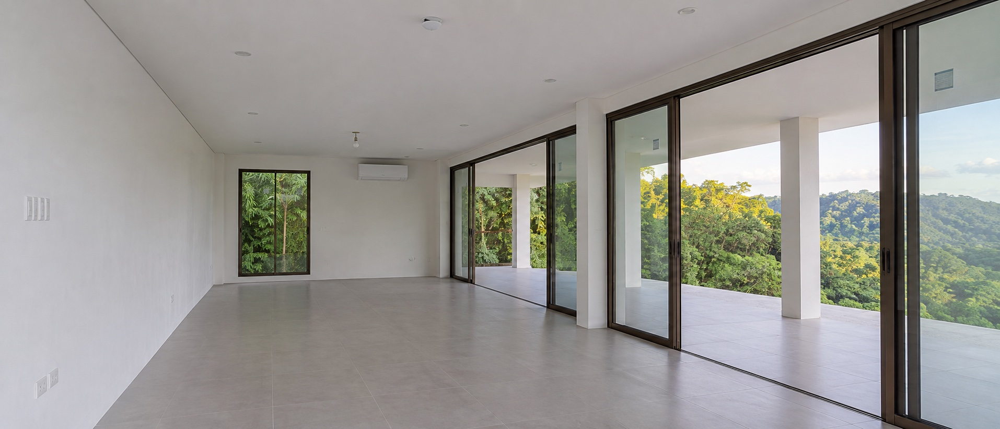
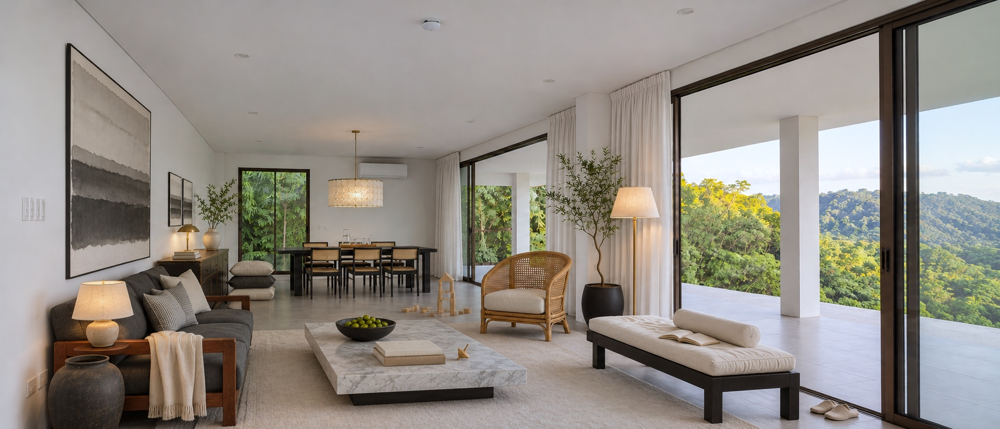

Spaces to come home to.
Kanlungan is an interior design studio and shop. We furnish homes and small hotels so they feel like refuge.
Spaces to come home to.
Kanlungan is an interior design studio and shop. We furnish homes and small hotels so they feel like refuge.


A home should lower your shoulders when you walk in. We design for that feeling: cool rooms, honest materials, and furniture made by people we know.